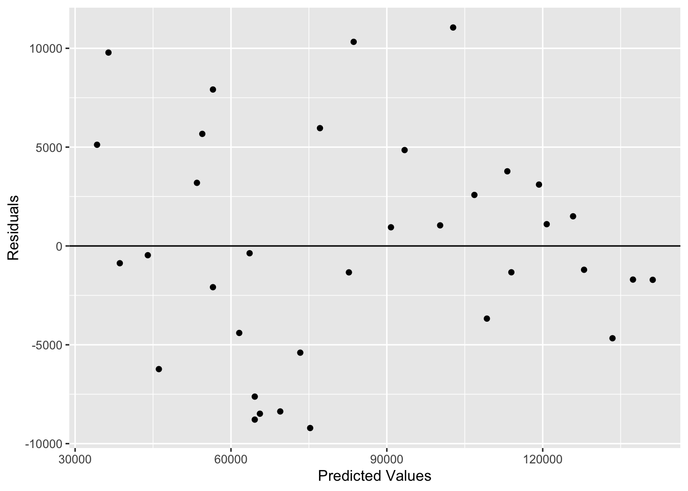

Mean of the Ys is accurately modeled by linear function of the Xs
\(\varepsilon\) is assumed to be Normal with a mean of 0
\(\varepsilon\) is assumed to have constant variance \(\sigma^2\)
Errors are independent
No perfect collinearity
We can investigate many of our assumptions through residuals in residuals vs. fitted values plots.
1.1 R Code
Code
library(tidyverse)library(httpgd)library(reticulate)use_condaenv(condaenv ="msa", required =TRUE)data_path <-"data/Salary.csv"salary <-read.csv(data_path)par(mfrow =c(2, 2))salary_lm <-lm(Salary ~ YearsExperience, data = salary)ggplot(salary_lm, aes(x = .fitted, y = .resid)) +geom_point() +geom_hline(yintercept =0) +labs(x ="Predicted Values", y ="Residuals")
1.2 Python Code
Code
import pandas as pdimport seaborn as snsfrom pathlib import Pathsalary = r.salarysns.residplot(salary, x="YearsExperience", y="Salary", order=2)
2 Misspecified Model
We detect a misspecified model when a pattern is detected in the residuals. The model form is incorrect for the data.
We can potentially resolve this by including polynomial terms, interactions, splines, etc.
3 Model Hierarchy
When adding higher order terms (power terms and/or interactions) you should have all lower terms included in the model.
If \(x^3\) is in the model, you should have \(x\) and \(x^2\) in the model as well. If you include an interaction \(x_1x_2\) in the model, then \(x_1\) and \(x_2\) should be included.
4 Polynomial Regression
Patterns in residual plots of our variable may give us an indication to try higher order terms.
In a polynomial regression, if the higher order term is used then we lose the interpretation for that entire variable.
If we do model selection with higher order terms and the higher orders end up in the final model then we have to make sure to add the lower terms back in to the model.
4.1 R Code
Code
salary_quad <-lm(Salary ~ YearsExperience +I(YearsExperience^2), data = salary)summary(salary_quad)
Call:
lm(formula = Salary ~ YearsExperience + I(YearsExperience^2),
data = salary)
Residuals:
Min 1Q Median 3Q Max
-9210.7 -4037.8 -467.7 3485.5 11052.0
Coefficients:
Estimate Std. Error t value Pr(>|t|)
(Intercept) 21855.58 3630.80 6.019 1.03e-06 ***
YearsExperience 11456.37 1217.28 9.411 9.79e-11 ***
I(YearsExperience^2) -193.90 84.45 -2.296 0.0284 *
---
Signif. codes: 0 '***' 0.001 '**' 0.01 '*' 0.05 '.' 0.1 ' ' 1
Residual standard error: 5733 on 32 degrees of freedom
Multiple R-squared: 0.9701, Adjusted R-squared: 0.9682
F-statistic: 519 on 2 and 32 DF, p-value: < 2.2e-16
Code
ggplot(salary_quad, aes(x = .fitted, y = .resid)) +geom_point() +geom_hline(yintercept =0) +labs(x ="Predicted Values", y ="Residuals")

In R we use the I() function to create a higher order term
When a straight line is inappropriate, we can consider:
Fit a polynomial/more complex regression
Transform the dependent and/or independent variables to obtain linearity
Fit a nonlinear regression model if appropriate
Fit a nonparametric regression model (e.g. LOESS)
5 Lack of Constant Variance
The random error, \(\varepsilon\), is assumed to have a constant variance, \(\sigma^2\). Under heteroscedasticity, any inferences under traditional assumptions will be incorrect and our hypothesis tests and confidence intervals will not be valid.
We can detect heteroscedasticity by either plotting residuals or using Spearman Rank Correlation.
Lack of Constant Variance
5.1 Spearman Rank Correlation
If Spearman rank coefficient between the absolute value of the residuals and predicted values is:
Close to zero: variance is potentially homoscedastic
Positive: variance increases as mean increases
Negative: variance descreases as the mean increases
\(H_0:\) Variance is homoscedastic
\(H_a:\) Variance is heteroscedastic
If there is a relationship between the absolute value of residuals and predicted value but it is not linear, this test will not discover it.
Warning in cor.test.default(abs(resid(lm_var)), fitted.values(lm_var), method =
"spearman", : Cannot compute exact p-value with ties
Spearman's rank correlation rho
data: abs(resid(lm_var)) and fitted.values(lm_var)
S = 7493, p-value = 0.7779
alternative hypothesis: true rho is not equal to 0
sample estimates:
rho
-0.0494467
6 Lack of Normality
Check that error terms are Normal by examining:
Histogram of residuals
Normal probability plot of the residuals (QQ-Plot)
Formal tests for Normality
6.1 Formal Tests
\(H_0:\) Normality
\(H_a:\) Not Normal
Anderson-Darling is based on empirical cumulative distribution function of data and gives more weight to the tails.
Shapiro-Wilk uses correlation between sample data and normal scores. The Shapiro-Wilk is better for smaller data sets.
6.1.1 R Code
Code
library(nortest)ad.test(resid(lm_var))
Anderson-Darling normality test
data: resid(lm_var)
A = 0.4791, p-value = 0.2205
Code
shapiro.test(resid(lm_var))
Shapiro-Wilk normality test
data: resid(lm_var)
W = 0.94679, p-value = 0.09028
6.2 Accounting for Lack of Normality
Depends on why the assumption was broken:
Outliers \(\rightarrow\) Robust Regression
Nonnormal \(\rightarrow\) Transformation Needed
Can try Box-Cox transformation
6.3 Box-Cox Transformation
Box-Cox developed method to determine best power transformation to induce Normality.